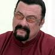
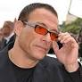
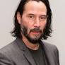
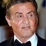

Chuck Norris
Bad actor but still better than Seagal
Carlos Ray "Chuck" Norris (born March 10, 1940) is an American martial
artist and actor.
He is a black belt in Tang Soo Do, Brazilian jiu jitsu and judo. After
serving in the United States Air Force, Norris won many martial arts
championships and later founded his own discipline Chun Kuk Do.
Shortly after, in Hollywood, Norris trained celebrities in martial
arts.

Steven Seagal
Damn bad actor
Seagal is a guitarist and has released two studio albums, Songs from
the Crystal Cave and Mojo Priest.
He performed on the scores of several of his films. He has worked with
Stevie Wonder and Tony Rebel, who both performed on his debut album.

Jean-Claude van Damme
Watchable actor
He was participating in several competitions. With the desire of
becoming an actor.
Born and raised in Brussels, Belgium, at the age of ten his father
enrolled him in martial arts classes.

Keanu Reeves
The Chosen One
In addition to acting, Reeves has directed the film Man of Tai Chi
(2013).
He has played bass guitar for the band Dogstar and pursued other
endeavours such as writing and philanthropy. He starred in the action
thriller Speed (1994) alongside Sandra Bullock and Dennis Hopper. He
plays police officer Jack Traven.

Sylvester Stallone
Underrated actor
In 1977, Stallone was the third actor in cinema to be nominated for
two Academy Awards for Best Original Screenplay and Best Actor.
Stallone's film Rocky was inducted into the National Film Registry.
Up until 1982, Stallone's films were not big box-office successes
unless they were Rocky sequels, and none received the critical acclaim
achieved with the first Rocky. This changed with the successful action
film First Blood in which he portrayed the PTSD-plagued soldier John
Rambo.